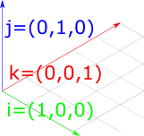
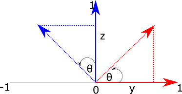

Geometry and Transformations
1.6 Transformations
A transformation is a mapping from points to points or from vectors to vectors. In 3D graphics, we are most interested in translations (moving from position to position), scaling, and rotation around an axis.
It turns out that we can express these translations in 4x4 matrices, which, when multiplied with a vector or point, will result a new vector/point with the translation applied. The same set of matrices will work for both vectors and points To do this, we first convert our representation of vectors and points into a single, 4 element representation: their homogeneous coordinates. The additional component will be zero for a vector, and a non-zero value for points. So both points and vectors will look like this:
\[ p = (x, y, z, 1) \\ v = (x, y, z, 0) \]
This representation is very convenient, because it means that the operations we might perform on points and vectors will reflect their geometric interpretation. For example, if we subtract two points, we get a vector:
\[ (8, 4, 2. 1) - (3, 2, 1, 1) = (5, 2, 1, 0) \]
And adding two vectors gives us another vector:
\[ (0, 0, 1, 0) - (1, 0, 0, 0) = (1, 0, 1, 0) \]
Once we have 4-element tuples like those above, we can construct 4x4 matrices which, when multipled with a point or vector, result in the desired transformation.
Scaling
If we want to scale each element of a point or vector, we can construct a matrix like this:
\[ \begin{bmatrix} 5 & 0 & 0 & 0\\ 0 & 5 & 0 & 0\\ 0 & 0 & 5 & 0\\ 0 & 0 & 0 & 1 \end{bmatrix} \]
Multiplying this with a vector or point will result in the \(x, y, z\) values of the point being multiplied by 5, with the \(w\) value preserved (so scaling a point returns a point, and scaling a vector returns a vector). This is shown below. To multiply a 4-vector and a matrix, we take its dot product with each row in the matrix.
\[ \begin{bmatrix} 5 & 5 & 5 & 1 \end{bmatrix} \begin{bmatrix} 5 & 0 & 0 & 0\\ 0 & 5 & 0 & 0\\ 0 & 0 & 5 & 0\\ 0 & 0 & 0 & 1 \end{bmatrix}= \begin{bmatrix} 25 & 25 & 25 & 1 \end{bmatrix} \]
Translation
For translation, we just want to add some scalar value to each element. To do that, we can construct a matrix like this one:
\[ \begin{bmatrix} 1 & 0 & 0 & T_x\\ 0 & 1 & 0 & T_y\\ 0 & 0 & 1 & T_z\\ 0 & 0 & 0 & 1 \end{bmatrix} \]
To understand this, we can imagine a point \((3, 3, 3, 1\)) which we want to translate by \(1, 0, 0\). We can just focus on the \(x\) axis as this is the only one we expect to change. We take our input vector and take its dot product with the row vector \((1, 0, 0, 1\)):
\[ (3, 3, 3, 1) \cdot (1, 0, 0, 1)\\ = 3 \times 1 + 3 \times 0 + 3 \times 0 + 1 \times 1 \\ = 3 + 1 \]
So -- the '1' in the first entry of row 1 means we start with the original value of x, then all others are set to zero except for the final value, which will get multipied by 1. To take the dot product, we sum those values, which gives us the expected result of 3 + 1 for x. The translation happens because we multiply the final value of the row by the point's \(w\) value of 1. This has the consequence that translation has no impact on a vector, which makes sense, as vectors have no position.
Rotation
To understand how to construct rotation matrices, it's useful to first understand the notion of basis vectors. The basis vectors are a set of unit vectors which lie along the axes of a co-ordinate system.

Figure 1: The basis vectors \(\hat{i}\), \(\hat{j}\) and \(\hat{k}\), which are unit vectors parallel to the \(x\), \(y\) and \(z\) axes.
\(\hat{i}\) typically describes the unit vector in \(x\); \(\hat{j}\) typically describes the unit vector in \(y\); and \(\hat{k}\) typically describes the unit vector in \(z\). So the basis vectors are:
\[ \hat{i} = \begin{bmatrix} 1 \\ 0 \\ 0 \\ \end{bmatrix} \quad \hat{j} = \begin{bmatrix} 0 \\ 1 \\ 0 \\ \end{bmatrix} \quad \hat{k} = \begin{bmatrix} 0 \\ 0 \\ 1 \\ \end{bmatrix} \]
We can think of all vectors in a given co-ordinate system as being composed of these basis vectors. For example, if we imagine this vector:
\[ v = \begin{bmatrix} 2 \\ 3 \\ 4 \end{bmatrix} \]
We can also imagine this as being composed of the basis vectors:
\[ v = 2\hat{i} + 3\hat{j} + 4 \hat{k} = 2 \begin{bmatrix} 1 \\ 0 \\ 0 \end{bmatrix} + 3 \begin{bmatrix} 0 \\ 1 \\ 0 \end{bmatrix} + 4 \begin{bmatrix} 0 \\ 0 \\ 1 \end{bmatrix} = \begin{bmatrix} 2 \\ 3 \\ 4 \end{bmatrix} \]
This means that if we can figure out how to transform the basis vectors, we can transform anything in their space. Let's think about how we might rotate the 2d basis vectors. Figure 2 shows our goal -- we want to take the vectors \(\hat{i}\) (in red) and \(\hat{j}\) (blue) and rotate them by the angle \(\theta\).

Figure 2: Rotating a vector in two dimensions.
To do this, we can imagine the two right-angled triangles formed by each basis vector and the target (rotated) vectors:

Figure 3: Using triangles to calculate the x and y values of rotated basis vectors.
To find the \(x\) and \(y\) components of the new vectors, we just need to find the length of the base (adjacent side) and height (opposite side) of each of these triangles.
The formulas for sine and cosine allow us to retrieve these values for the angle \(\theta\):
\[ cos(\theta) = \frac{adjacent}{hypotenuse}\\ sin(\theta) = \frac{opposite}{hypotenuse} \]
Because we are dealing with the basis vectors, which have a length of one, we can remove the division term, giving us:
\[ cos(\theta) = adjacent\\ sin(\theta) = opposite \]
So for the red basis vector (\(\hat{i}\)), the rotated version is given by:
\[ i_x = cos(\theta)\\ i_y = sin(\theta)\\ \]
For the blue basis vector, the same pattern applies, but because the base of the triangle is along the y-axis, the values correspond to different sides of the triangle: we get \(j_x\) from the length of the opposite side, and \(j_y\) from the length of the adjacent side. We also need to negate the x component, as it extends to the left of the x-axis:
\[ j_x = -sin(\theta)\\ j_y = cos(\theta)\\ \]
Now we know how to calculate the new x and y values for the basis vectors, we can construct a 2x2 matrix to transform them by a given angle:
\[ \begin{bmatrix} \cos \theta & -\sin \theta \\ \cos \theta & \sin \theta \\ \end{bmatrix} \]
To verify that this matrix works, we can multiply it with the basis vectors \(\hat{i} = (1, 0)\) and \(\hat{j} = (0, 1)\) used in the previous examples:
\[ R(\hat{i}) = \\ \begin{bmatrix} \cos \theta & -\sin \theta \\ \cos \theta & \sin \theta \\ \end{bmatrix} \begin{bmatrix} 1 \\ 0 \end{bmatrix}\\ = \begin{bmatrix} (1 \times \cos \theta) - (0 \times \sin \theta) \\ (1 \times \sin \theta) + (0 \times \cos \theta) \end{bmatrix}\\ = \begin{bmatrix} \cos \theta\\ \sin \theta\\ \end{bmatrix} \]
\[ R(\hat{j}) = \\ \begin{bmatrix} \cos \theta & -\sin \theta \\ \cos \theta & \sin \theta \\ \end{bmatrix} \begin{bmatrix} 0 \\ 1 \end{bmatrix}\\ = \begin{bmatrix} (0 \times \cos \theta) - (1 \times \sin \theta) \\ (0 \times \sin \theta) + (1 \times \cos \theta) \end{bmatrix}\\ = \begin{bmatrix} - \sin \theta\\ \cos \theta\\ \end{bmatrix} \]
To take this into three dimensions, we just need to add an extra dimension, and make it so that one dimension remains unchanged while we rotate the vector around the target axis. So we are looking for three matrices, one per rotation axis, which will leave that component of the vector unchanged whilst modifying the others to reflect the rotation.
\[ M_x = \begin{bmatrix} ? & ? & ? \\ ? & ? & ? \\ ? & ? & ? \\ \end{bmatrix} \quad M_y = \begin{bmatrix} ? & ? & ? \\ ? & ? & ? \\ ? & ? & ? \\ \end{bmatrix} \quad M_z = \begin{bmatrix} ? & ? & ? \\ ? & ? & ? \\ ? & ? & ? \\ \end{bmatrix} \]
It's useful to start with the z-axis, because we've actually already covered the meat of it! A 2d rotation can also be imagined as a 3d rotation around the z-axis -- nothing moves in z, and we modify x and y to reflect the rotation. So all we need to do is take the 2d matrix used in the 2d example, move it into 3 dimensions, then ensure that the z axis stays constant. To fix the z axis, we can set the third column of the matrix to the basis vector \(\hat{k}\) = (\(0, 0, 1)\), and set the \(z\) value of the first and second columns (which represent the \(\hat{i}\) and \(\hat{j}\) basis vectors) to 0.
\[ M_z = \begin{bmatrix} \cos \theta & -\sin \theta & 0 \\ \cos \theta & \sin \theta & 0 \\ 0 & 0 & 1 \\ \end{bmatrix} \]
To derive the remaining matrices, we can go back to our original interpretation of rotation as finding the sides of triangles. However, this time we will fix x (which we can imagine projects out of the screen toward us), and manipulatethe y and z axes.

Figure 4: Rotating a vector around the \(x\) axis. We imagine \(x\) as extending out of the screen, and set the remaning axes to y (horizontal) and z (vertical).
The red triangle now represents the calculation for basis vector \(\hat{j}\), and the blue triangle now represents the calculation for \(\hat{k}\). To find the y-component of the transformed vector \(j_y\), we need the length of the base of the red triangle, which is \(\cos (\theta)\). To find \(j_z\), we need the length of the opposite side of the blue triangle, which is \(\sin (\theta)\).
For \(k\), we get the y-component from the inverse of the length of the opposite side of the blue triangle, so \(-\sin \theta\). The z-component comes from the length of the base of the blue triangle, which is \(\cos \theta\). So we have the following:
\[ j_y = \cos(\theta)\\ j_z = \sin(\theta)\\ k_y = -\sin(\theta)\\ k_z = \cos(\theta) \]
To create a matrix from these, we first want to ensure that the \(\hat{i}\) basis vector remains constant. To do this, we set the first column to that basis vector:
\[ M_x = \begin{bmatrix} 1 & ? & ? \\ 0 & ? & ? \\ 0 & ? & ? \\ \end{bmatrix} \]
We also want to ensure that the x-components of the y and z vectors are unaffected by the rotation, so we put zeros in their x-components:
\[ M_x = \begin{bmatrix} 1 & 0 & 0 \\ 0 & ? & ? \\ 0 & ? & ? \\ \end{bmatrix} \]
The middle column of this matrix represents \(\hat{j}\), and the third column represents \(\hat{k}\):
\[ M_x = \begin{bmatrix} 1 & 0 & 0 \\ 0 & \hat{j}_y & \hat{k}_y \\ 0 & \hat{j}_z & \hat{k}_z \\ \end{bmatrix} \]
So we can fill in the values we determined above using the triangle method:
\[ M_x = \begin{bmatrix} 1 & 0 & 0 \\ 0 & \cos(\theta) & -\sin(\theta) \\ 0 & \sin(\theta) & \cos(\theta) \\ \end{bmatrix} \]
To rotate around the Y-axis, we can just do the same trick again: take the triangle analogy above, then imagine that the Y axis is extending out from the screen, with X mapped to the vertical axis and Z mapped to the horizontal axis. We then get:
\[ k_x = \sin(\theta)\\ k_z = \cos(\theta)\\ i_x = \cos(\theta)\\ i_z = -\sin(\theta) \]
Once again, we want to ensure the rotation axis stays constant, so the middle column of our matrix needs to be set to \(\hat{j}\):
\[ M_x = \begin{bmatrix} ? & 0 & ? \\ ? & 1 & ? \\ ? & 0 & ? \\ \end{bmatrix} \]
We then set the \(y\) value of the other basis vectors to zero:
\[ M_x = \begin{bmatrix} ? & 0 & ? \\ 0 & 1 & 0 \\ ? & 0 & ? \\ \end{bmatrix} \]
The first column of this matrix represents \(\hat{i}\), and the final column represets \(\hat{k}\).
\[ M_x = \begin{bmatrix} i_x & 0 & k_x \\ 0 & 1 & 0 \\ i_z & 0 & k_z \\ \end{bmatrix} \]
So we can fill in the values from the triangle method:
\[ M_x = \begin{bmatrix} \cos(\theta) & 0 & \sin(\theta) \\ 0 & 1 & 0 \\ -\sin(\theta) & 0 & \cos(\theta) \\ \end{bmatrix} \]
Finally, to make these transformations compatible with the 4x4 transforms introduced earlier in the section, we need to add padding. This padding will be all zeros, except for the bottom right-hand element of the matrix, which ensures that the w-component of the input is preserved, so a rotated vector is a vector, and a rotated point is a new point. This gives us the following matrices:
\[ R_x(\theta) = \begin{bmatrix} 1 & 0 & 0 & 0\\ 0 & cos \theta & - sin \theta & 0\\ 0 & -sin \theta & cos \theta & 0\\ 0 & 0 & 0 & 1 \end{bmatrix} \]
\[ R_y(\theta) = \begin{bmatrix} cos \theta & 0 &- sin \theta & 0\\ 0 & 1 & 0 & 0\\ sin \theta & 0 & cos \theta & 0\\ 0 & 0 & 0 & 1 \end{bmatrix} \]
\[ R_z(\theta) = \begin{bmatrix} cos \theta & - sin \theta & 0 & 0\\ sin \theta & cos \theta & 0 & 0\\ 0 & 0 & 1 & 0\\ 0 & 0 & 0 & 1 \end{bmatrix} \]